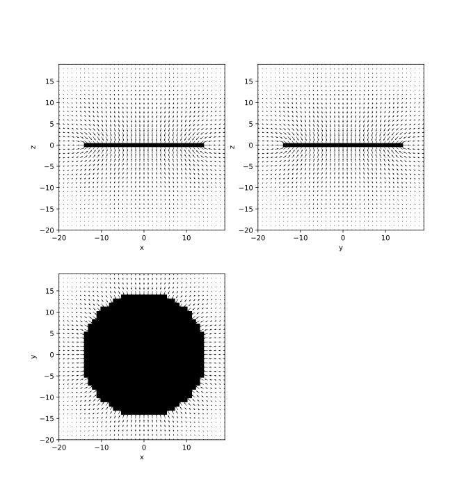

Some time ago, I was told that the model in my head, which represents our beautiful planet as a spheroid, was a dirty, naive lie. The earth is flat! And they don't want us to find the edge. Undeniable. Fascinating!
Well, maybe not so fascinating. The arguments presented didn't exactly manage to shake the foundations of our world, and sadly enough, my earth stays round. But a pretty interesting question did linger: what would it feel like to live on a disc-world?
The first troubles appeared along with Newton's theory of gravity: reading disc world texts, one would think that falling off the edge of the world is a real and terrifying possibility. But we pedants know that the gravity field at the edge of a disc-shaped mass would pull you towards the disc.. Which means you would be able to stand proudly on the edge, and even jump over to the other side.
But that's not all: imagine standing at some arbitrary point on the disc, say, somewhere between the middle and the edge. Disc-world literature foolishly paints this as a perfectly normal experience, with gravity pulling adventurous traveller straight down, towards the disc soil under his feet, like gravity does to you right now. But it turns out that, as you walk towards the edge, the mass in the center of the disk does not release its grip on you. And so, the same effect which allowed you to stand on the edge of the disc also means that, as you get closer to the edge regions, you would feel as though you were climbing an increasingly steeper hill. But looking back, the downhill slope would be the previously flat surface you had walked on. It would feel like the whole disc is tilting under your feet, making progress more and more difficult. By the time you reached the edge, you would basically be rock-climbing, the straight wall in front of you extending straight down for miles, all the way to the disc's other edge.
In fact, if at that point you accidentally dropped, say, a rubber ball from your pocket, it would roll and roll straight down, past the center of the disc, slow down, and roll back the other way, this would repeat, slower and slower due to friction, until it would stop, smack in the middle of the disc. In other words it would feel like being on the inside of a gigantic half pipe, which simultaneously looked totally flat. Of course at an extremely large scale, forests, hills, rivers would get in the way. And on most of the disc, this effect of gravity seemingly pulling you sideways would be relatively small. Or would it?
At this point, I realized that I had no clue how strong this effect would be for most of the disc inhabitant. Would this side-force be mere thousandth of a g, almost imperceptible to inhabitants almost all the way to the edge, or quite strong, relatively to the main down component of the force de pesanteur ? In other words: what would be the angle of the gravity field vector along the disc surface?
Of course, a physicist or mathematician would look at the formal theory, find the right theorem, identify the important terms in the equation, then provide us with a beautiful answer. But when your hammer is numerical simulation, this problem looks eerily similar to a virtual, discretized nail.
It turns out that this effect is quite significant! Inhabitants living halfway to the edge of the ring from the middle would already have to stand tilted to stay up. And what's more, this tilt angle is not dependent on the gravitational constant. Only the disc geometry. And you can't make it go away by building a bigger disc. A person living halfway to the disc edge from center will always be tilted by the same angle, no matter the disc radius. (as long as it remains a disc, i.e. much thinner than it is wide)
This also has interesting implications for geography and geology of our disc world: rivers will tend to flow towards the middle. Of course, exceptions could exist in the case of local mountains or hills. Still, the trend of water flowing towards the middle means that a sea there would be very likely. On top of that, a large sea in the middle of our disc-world would naturally have to bulge up, due to the sideways forces of gravity. Then there's the fact matter on the disc's edge would tend move towards the center, through erosion, rolling stones, wind, or whatever else. Over millions of years, unless it was made of some formidable material, the disc would get thicker in the middle, and erode at the ends, eventually turning into a sphere.
And of course, since we built a strange-world gravity field calculator, it would be a shame not to put it to use. Here are the gravity fields for cube-world, square-disc-world, and line-world.
The strange physics of these imaginary worlds could inspire fantastic stories. Imagine a fortress at the edge of the disc-world, almost impossible to reach, as it would require climbing an increasingly steeper hill for miles and miles. It would take a several-year-long, arduous trip and the challenges along the way would be numerous, through increasingly strange landscapes and improbable settlements. The narrative almost writes itself. (in this genre, check out La Horde du Contrevent by Alain Damasio.)